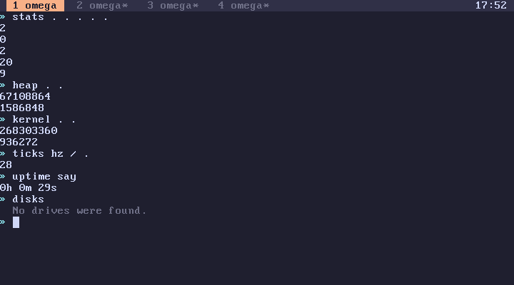

subverge
subvergeWorld
- What a world holds
- Kept outside a world
- A new world per line
- An example
- Looking at your world
- Changing it
- Worlds and saving
A world is the state of one tab that omega keeps track of: its stack and its definitions. Transactions, back and saving all work on worlds. A line either replaces the world with a new one or leaves it alone, back returns to an older one, and saving writes the current one to disk.
What a world holds
- The stack, every value on it, bottom to top.
- The definitions made in the tab with
:name,editorforget, newest first.
Each of the four tabs has its own world.
Kept outside a world
These are kept elsewhere and follow their own rules:
| State | Where it lives |
|---|---|
| root words | root, shared by all tabs, edited with open |
locals from { } and -> |
the running quote, gone when it finishes |
| the screen | the tab's screen buffer, never undone |
| the tab's title | the tab, reset on reboot |
| memory, ports, the CPU | the machine, changed the moment a word runs |
| prompt history | the tab, text only |
A new world per line
A line starts from the tab's current world and works on a copy. When the line finishes:
- if it failed, the copy is thrown away and the world stays as it was;
- if it succeeded and changed the stack or definitions, the copy becomes the new world, and the old one goes into the history;
- if it succeeded without changing anything, the line leaves no trace.
The history keeps the last 64 worlds, and back returns to them. A line that only prints or inspects, such as words or top, doesn't add a world, so back steps over it.
Keeping 64 old worlds takes little memory. Defining a word adds one entry in front of the existing definitions instead of copying them, so successive worlds share almost everything (how worlds work).
An example
Each line below either makes a new world or doesn't:
1 2 new world: the stack is 1 2
[ dup dup * * ] :cube new world: cube is defined
words no new world, it only prints
3 cube new world: the stack is 1 2 27
0 / fails, the world stays 1 2 27
back returns to the world before 3 cube
back returns to the world before cube was defined
After the two backs the stack is 1 2 and cube is gone. redo would bring cube back. words and the failed line never made a world, so back steps over them.
Looking at your world
words every definition, with its value
depth . how many values are on the stack
depth list . the whole stack as one list
'sq see one definition
stats five numbers about the tab
words lists the newest definition of each name and leaves out names that forget removed. A tab with nothing defined says nothing is defined in this tab.
stats pushes the number of live objects in the tab's heap, how many garbage collections have run, the number of definition entries, the stack depth and the length of the history:
stats . . . . .
top shows the same numbers for the tab it runs in, updated live.

Changing it
Definitions are added with :name and removed with forget:
[ dup * ] :sq
'sq forget
forget adds an entry that hides the name rather than deleting the old one, so back can still undo it, and a root word with the same name becomes visible again (names). forget only works on names defined in the tab.
empty clears the stack in one go.
Worlds and saving
On an installed disk, the world is saved to the tab's slot after each line that changes it. What is saved is the newest definition of each name and the stack, as omega source (saving). The history isn't saved, so after a reboot the tab has its world but nothing to go back to.